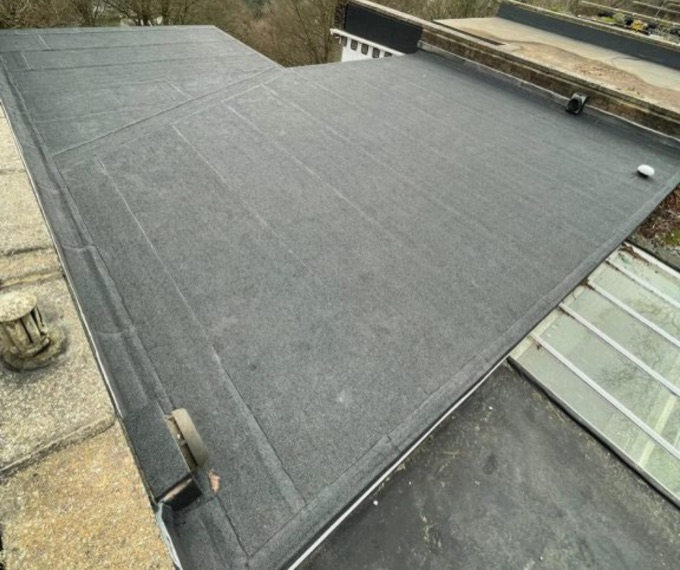
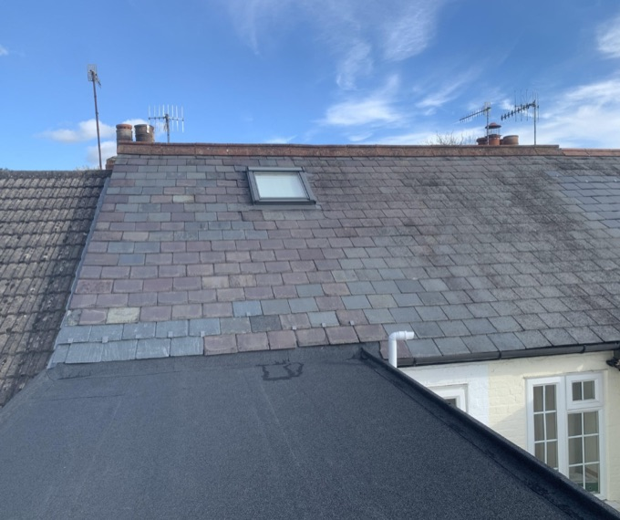
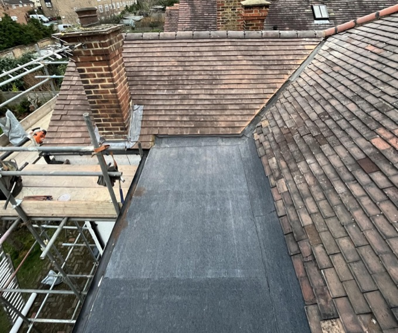
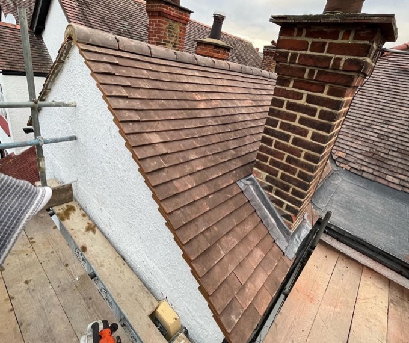
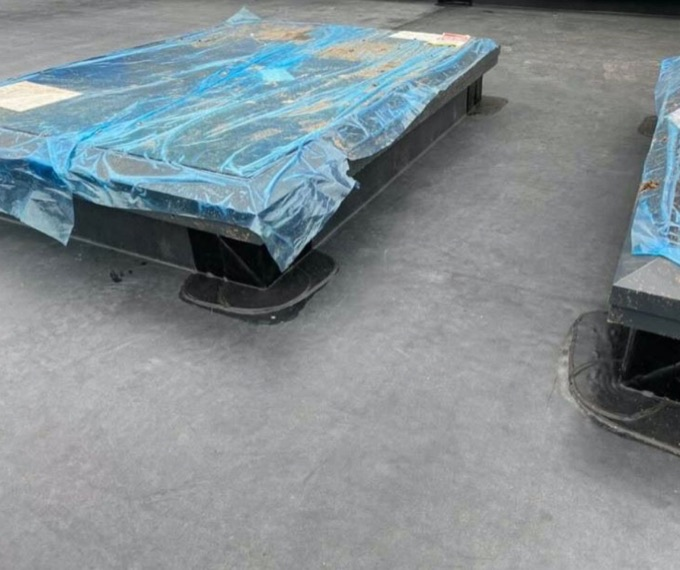
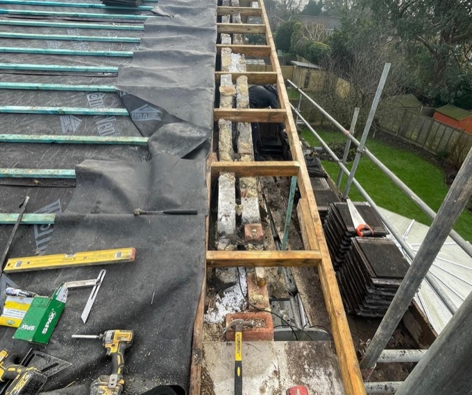
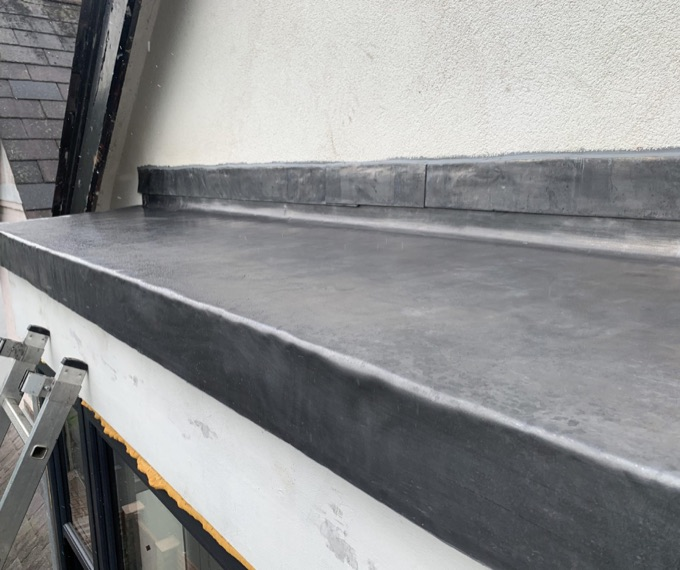
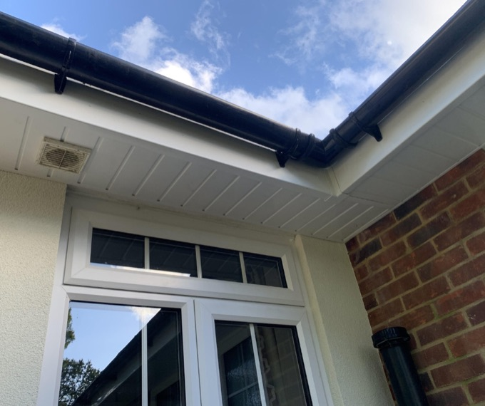

Domestic Roofing
Roofing for homes across London, Surrey, Sussex and the surrounding areas — from flat-roof felt, GRP and rubber systems through to slate, tiling, leadwork and complete re-roofs.

01 / 08
Felt Roofing
Felt roofing is a reliable, cost-effective roofing solution widely used on flat and low-pitched roofs for both domestic and commercial properties. At Tectum Roofing, we install and repair high-performance felt roofing systems designed to provide long-lasting weather protection.
Our felt roofs are installed using modern torch-on and multi-layer techniques, offering improved durability compared to traditional felt. They provide excellent waterproofing and resistance to the UK climate, including heavy rain and temperature fluctuations, and we carefully prepare roof surfaces to ensure proper adhesion and longevity.
Felt roofing offers a strong balance between affordability and performance, and is available in different finishes to suit the appearance and functional needs of your property. Our team carries out new installations, repairs, and full replacements, suitable for both planned upgrades and emergency repairs. We provide honest advice on whether felt roofing is the right option for your roof, designed to deliver peace of mind and long-term protection.
Get a Quote- Ideal for garages, extensions, porches, sheds, and commercial buildings.
- All work is completed in line with current building regulations and safety standards.
- Fully insured and installed by qualified, experienced roofers.
- Serving clients across London, Surrey, Sussex, and surrounding areas.

02 / 08
Slating
Slate roofing is a premium roofing solution known for its durability, natural appearance, and long lifespan. At Tectum Roofing, we specialise in traditional and modern slate roofing installations.
Slate roofs can last over 100 years when properly installed and maintained, and provide excellent resistance to wind, rain, frost, and fire. Slate roofing also adds significant value and curb appeal to a property.
We work with natural and man-made slate, depending on customer preference and budget, and each slate is carefully installed to ensure structural integrity and visual consistency. Slating requires skilled craftsmanship — our roofers have 15 years of hands-on experience. We handle repairs, replacements, and full slate re-roofs, and special care is taken to match existing slates during repairs.
Get a Quote- Ideal for period properties, listed buildings, and high-end homes, as well as select commercial projects.
- Suitable for both domestic and commercial properties.
- Fully insured and accredited roofing specialists, fully compliant with UK building regulations.
- Covering London, Surrey, Sussex, and surrounding areas.

03 / 08
GRP (Fibreglass Roofing)
GRP roofing, also known as fibreglass roofing, is a modern flat roofing solution with exceptional durability. It creates a seamless, fully waterproof surface.
Installed in one continuous layer, it reduces the risk of leaks and is extremely resistant to cracking, standing water, and UV damage. GRP roofs can last 30+ years with minimal maintenance, and are low maintenance compared to traditional flat roofing systems.
It provides a clean, modern finish suitable for contemporary properties and can be finished in a range of colours and textures, making it ideal for roofs with complex shapes or detailing. Our team uses high-quality GRP materials for long-term performance, and installation is carried out by fully trained specialists.
Get a Quote- Ideal for flat roofs, balconies, terraces, and extensions.
- Suitable for both residential and commercial buildings.
- Fully insured and compliant with building standards.
- Available across London, Surrey, Sussex, and nearby areas.
No Obligation
Not sure which system your roof needs?
Tell us what’s happening up there and we’ll take a look. You’ll get honest advice on the right option for your property — whether that’s a straightforward repair or a full replacement.

04 / 08
Tiling
Roof tiling is a popular and versatile roofing option for pitched roofs. At Tectum Roofing, we install and repair concrete and clay roof tiles.
Tiles offer excellent weather resistance and longevity, with strong resistance to wind, rain, and frost, making them a long-lasting, low-maintenance roofing solution. They are available in a wide range of colours and styles, enhancing both traditional and modern properties.
Individual tiles can be replaced, making repairs cost-effective, and we match existing tiles where possible for seamless repairs. Our team ensures correct batten spacing and ventilation on every installation.
Get a Quote- Suitable for new builds, extensions, and replacement roofs.
- Ideal for domestic and commercial properties.
- Installed to meet UK roofing standards and regulations, with fully insured and qualified workmanship.
- Serving London, Surrey, Sussex, and surrounding areas.

05 / 08
Rubber Roofing (EPDM)
Rubber roofing, commonly known as EPDM, is a durable flat roofing system. It provides a flexible, seamless waterproof membrane.
EPDM is highly resistant to UV rays, cracking, and extreme temperatures, with excellent resistance to standing water and a long lifespan with minimal maintenance requirements. It is also an environmentally friendly and recyclable material.
The installation process is quick and efficient, and the membrane is available in different thicknesses for added durability. Suitable for both small and large flat roof areas, it is a strong alternative to felt and GRP roofing systems, and every roof is installed by experienced and fully qualified roofers.
Get a Quote- Ideal for flat roofs, garages, extensions, and commercial buildings.
- Fully insured installations for peace of mind.
- Complies with UK building regulations.
- Covering London, Surrey, Sussex, and nearby areas.

06 / 08
Re-Roofs
A re-roof is often the best solution for aging or extensively damaged roofs. At Tectum Roofing, we provide complete roof replacement services.
A replacement roof improves structural integrity and weather protection, and enhances energy efficiency and ventilation. It is also an opportunity to upgrade materials and insulation, and increases property value and visual appeal.
We remove old roofing safely and responsibly, with new roofs installed to the highest industry standards and available in slate, tile, felt, GRP, and rubber systems. Every project is managed by experienced professionals from start to finish, with transparent advice and honest recommendations throughout.
Get a Quote- Suitable for both domestic and commercial properties.
- Fully compliant with UK building regulations.
- Fully insured and accredited workmanship.
- Serving London, Surrey, Sussex, and surrounding areas.
Fast Response
Roof leaking? Talk to us today.
We handle both emergency repairs and planned work across London, Surrey, Sussex and the surrounding areas. Call us, or send a photo over on WhatsApp and we’ll tell you what we think.

07 / 08
Lead Roofing & Leadwork
Lead roofing is a traditional and highly durable roofing solution. It is commonly used for flashing, valleys, chimneys, and flat roofs.
Lead has an exceptional lifespan, often lasting 60+ years, and provides superior waterproofing and flexibility. It is resistant to corrosion and extreme weather, and allows for natural expansion and contraction, making it a long-term, low-maintenance solution.
All of our leadwork is installed to Lead Sheet Association guidelines. Skilled craftsmanship is essential — our team is highly experienced, and we carry out repairs, replacements, and new lead installations that enhance both function and appearance.
Get a Quote- Ideal for period and heritage properties.
- Suitable for domestic and commercial projects.
- Fully insured and accredited work.
- Available across London, Surrey, Sussex, and surrounding areas.

08 / 08
uPVC & Plastics
uPVC and plastic roofing components are essential for roofline protection. This includes fascias, soffits, guttering, and cladding.
They protect roofs from water ingress and rot, and improve drainage and ventilation. The materials are low maintenance and long-lasting, resistant to weathering, corrosion, and fading, making them a cost-effective and durable solution.
uPVC is an ideal replacement for old timber roofline products, available in various colours and finishes that enhance the overall appearance of your property. Everything is professionally installed for correct alignment and flow.
Get a Quote- Suitable for both residential and commercial buildings.
- Fully insured and qualified workmanship.
- Complies with current building standards.
- Serving London, Surrey, Sussex, and surrounding areas.
Get In Touch
Request a Quote
Tell us what you need and we’ll give honest advice on the right system for your property — a repair, a single service, or a full re-roof. We’ll come out, take a proper look, and put a no-obligation price together for you.
- Area London, Surrey, Sussex & Surrounding Areas
- Phone 01372 613023
- WhatsApp 07762 204033
- Email info@tectum-roofing.co.uk